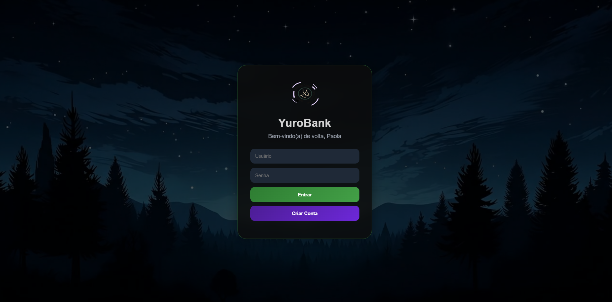
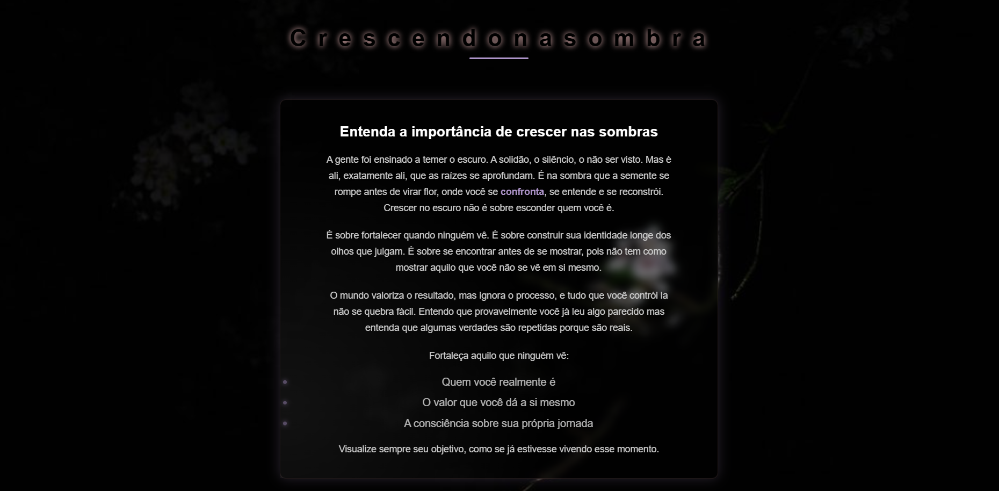

Transformando curiosidade em projetos reais
Lauan Oliveira
Desenvolvedor Front-End em formação
Transformando curiosidade em projetos reais.
Movido pela curiosidade, pela resolução de problemas e pelo desejo constante de aprender. Transformando perguntas em conhecimento e conhecimento em projetos reais.
Sobre Mim
Minha trajetória profissional começou muito antes do desenvolvimento Front-End.
Durante mais de três anos atuei na resolução de problemas técnicos e atendimento ao cliente, aprendendo diariamente a lidar com desafios, encontrar soluções e ajudar pessoas mesmo sob pressão.
Foi nesse período que desenvolvi uma característica que carrego até hoje: a curiosidade. Quando não sei algo, procuro aprender. Quando encontro uma resposta, gosto de entender também o que existe por trás dela.
Hoje aplico essa mesma mentalidade no desenvolvimento Front-End, transformando ideias em projetos reais através do HTML, CSS e JavaScript.
Projetos

🏦 YuroBank
Projeto de banco digital fictício criado para praticar HTML, CSS e JavaScript.

🌑 ShadowBloom
Projeto criado para representar crescimento silencioso, autoconhecimento e evolução através da programação.
Tecnologias
HTML
Estruturação semântica de páginas web, organização de conteúdo e boas práticas de acessibilidade.
CSS
Estilização de interfaces, responsividade, animações e criação de experiências visuais modernas.
JavaScript
Manipulação do DOM, interatividade e construção de funcionalidades dinâmicas para aplicações web.
Git
Controle de versões para acompanhar alterações e evolução dos projetos.
GitHub
Hospedagem de projetos, compartilhamento de código e construção de portfólio profissional.
Idiomas
Minha Jornada
2022 — Primeiro contato com programação
Foi nesse período que tive meu primeiro contato com o mundo da programação. No início tudo parecia complexo e distante da minha realidade, mas a curiosidade falou mais alto. Descobri que por trás de cada site, aplicativo ou sistema existiam pessoas criando soluções através do código, e isso despertou algo em mim.
Brasil Center Comunicações
Durante mais de três anos atuei com suporte técnico e atendimento ao cliente. Foi uma experiência que me ensinou muito sobre resolução de problemas, comunicação, trabalho em equipe e persistência. Diariamente eu precisava encontrar soluções para situações diferentes, muitas vezes sob pressão, desenvolvendo uma mentalidade voltada para análise e aprendizado contínuo. Ao longo dessa trajetória também recebi reconhecimentos internos pelo desempenho, colaboração com equipes e comprometimento com os resultados.
Retorno aos estudos
Depois de um período afastado da programação, decidi voltar aos estudos com mais maturidade e disciplina. Passei a dedicar parte da minha rotina ao aprendizado de HTML, CSS e JavaScript, buscando não apenas entender como criar páginas, mas também compreender os fundamentos por trás de cada tecnologia.
ShadowBloom
Meu primeiro projeto pessoal. Mais do que um exercício técnico, ShadowBloom representou uma ideia que eu queria transformar em algo visual. O projeto foi inspirado no conceito de crescimento silencioso, evolução constante e desenvolvimento pessoal. Foi nele que comecei a explorar animações, efeitos visuais e criatividade através do código.
YuroBank
Um projeto mais desafiador que me permitiu evoluir em diversas áreas do Front-End. Durante seu desenvolvimento pratiquei estruturação de interfaces, estilização avançada, organização de componentes e interatividade com JavaScript. Foi um marco importante na minha evolução porque deixou de ser apenas uma página e começou a se aproximar de uma aplicação real.
Próximos Projetos
Minha jornada está apenas começando. Continuo estudando diariamente, desenvolvendo novos projetos e buscando evoluir tanto tecnicamente quanto profissionalmente. Cada projeto representa uma nova oportunidade de aprender algo diferente e transformar conhecimento em experiência.
Contato
Estou sempre aberto para trocar experiências, aprender com outros profissionais e conversar sobre tecnologia, desenvolvimento e novas oportunidades.
O que vem a seguir?
Minha trajetória ainda está sendo escrita.
Cada projeto começa com uma pergunta, uma curiosidade ou uma ideia que quero entender melhor.
Aprender sempre foi o ponto de partida. O código apenas transformou essa curiosidade em algo que pode ser construído.
Quando encontro uma resposta, gosto de entender também o que existe por trás dela. É essa mentalidade que levo para cada estudo, cada desafio e cada projeto que desenvolvo.